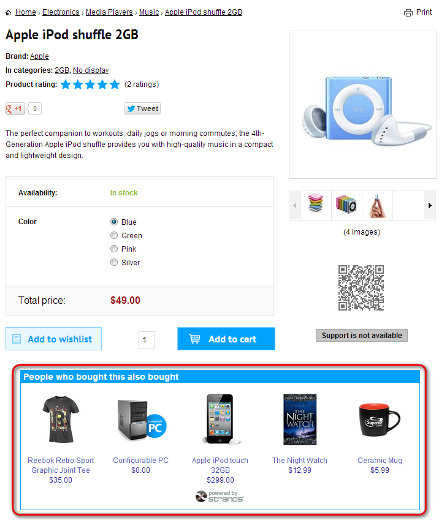
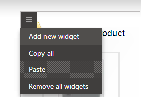
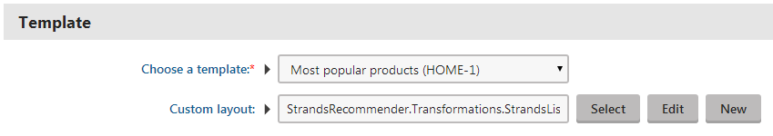

Placing Strands recommendations on a page
You can recommend products on pages using Strands via a widget or a web part. The recommendations are displayed based on the behavior of the users visiting the site.
There are currently five types of recommendations that you can make the web part display:
Home - displays recommendations from the Home category. The web part can display these recommendations on any type of pages.
Category - displays recommendations from the category named Category. The web part displays recommendations of the same product category (determined by page type by default—you can customize how products are categorized) as the product the user is currently viewing. If there are no other products in the category, no recommendations are displayed.
Product Detail - displays recommendations from the Product detail category. The web part can display these recommendations on pages that are set to represent a product type.
Shopping Cart / Wishlist - displays recommendations from the Shopping Cart / Wishlist category. The recommendations are displayed only to users who have a product in their shopping cart. The web part can display these recommendations on any type of pages.
Order Confirmation - displays recommendations from the Order Confirmation category. The recommendations are based on the user's last purchase. The web part can display these recommendations on any type of pages.

A Strands recommendation web part placed on a product
Make sure you configure the Strands recommendation integration before placing a Strands recommendation widget or web part.
Placing Strands recommendations widget on a page
Open the Pages application.
Choose the page on which you want to place the widget.
On the Page tab, open the widget zone menu (
 ).
).Click Add new widget.

Adding a new widget on a pageChoose Strands recommender -> Strands recommendations and click Select.
Under Template, use the Choose a template drop-down list to choose the Strands recommender widget that you want to display.
(Optional) If you want to adjust how the recommendations look on the page further than what is offered on the Strands recommender website, specify a transformation in the Custom layout field.

Choosing a strands recommender widget(Optional) Specify the rest of the widget properties.
Click Save & Close. The system places the widget on the page.
Save the page.
You have configured the Strands recommendations widget to display recommendations based on visitor behavior.
Placing Strands recommendations web part on a page
Open the Pages application.
Choose the page on which you want to place the web part.
Switch to the Design tab.
Place the Strands recommendations web part on the page.
Under Template, use the Choose a template drop-down list to choose the Strands recommender widget that you want the web part to display.
(Optional) If you want to adjust how the recommendations look on the page further than what is offered on the Strands recommender website, specify a transformation in the Custom layout field.
Choosing a strands recommender widget(Optional) Specify the rest of the web part properties.
Click on OK to confirm. The system places the web part on the page.
Save the page.
You have configured the Strands recommendations web part to display recommendations based on visitor behavior.
Custom Strands recommendations layout
By using a transformation to define a custom layout in the Strands recommendations web part, you can fully control the way the recommendations are displayed on the page. You only need to specify the amount of items you wish to display and the logic of the recommendation on the Strands recommender website. You can handle the rest by the transformation. You can create your own transformation or edit one of the two predefined transformation:
StrandsRecommender.Transformations.StrandsDefault - a transformation imitating the default recommendation template from the Strands recommender website.
StrandsRecommender.Transformations.StrandsList - a transformation displaying the recommendations in a vertical list.
Note that Strands recommendations transformations need to be of jQuery type. A jQuery transformation consists of HTML code and template tags that dynamically insert values of the object that is currently being processed. There are also tags that control the flow of the transformation. You can find more information on using jQuery transformations in Kentico in a topic describing their use in the Chat application.
Example transformation
One of the Strands recommendations transformations predefined in the system is the StrandsRecommender.Transformations.StrandsList transformation.
<div class="strandsLinkTemplate"> <h1 class="uiLight"> Recommendation title </h1> <ul> {{each(i, rec) recommendations}} <li> <a href="${rec.metadata.link}" onclick="SBS.Tracking.onRecClick('${rec.itemId}','${tpl}','${rrq}');return true;" > <img src="${rec.metadata.picture}" alt="${rec.metadata.name}" /> <h2 class="uiLight">${rec.metadata.name}</h2> </a> <span clas="price">{% ECommerceContext.CurrentCurrency != null ? string.FormatString(ECommerceContext.CurrentCurrency.CurrencyFormatString, "${rec.metadata.price}") : "${rec.metadata.price}" #%}</span> </li> {{/each}} </ul></div>The transformation displays recommendations in a vertical list. The CSS that you use with the transformation is automatically inserted on the page.
You can find detailed documentation of the parameters of the methods used in the transformation in the official documentation.